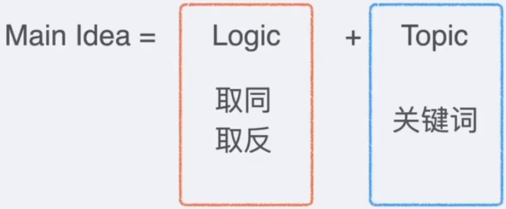

方法：概述和万能做法
取同：取同逻辑详解+多空联动
取反：取反逻辑详解+特殊逻辑
套路：六选二难点+常见对立逻辑
GRE填空长什么样子？
什么是主旨？
正确选项的特征？错误选项的特征？
什么是信息对应？
主流方法的利与弊？
完形填空：
我喜欢吃水果：
汽车
苹果
GRE填空——考推理
我喜欢吃水果：
苹果
汉堡
GRE：相比于语法更注重推理
定位
同义改写
取同
取反
定位
同义改写
所有做题需要的知识都再考试卷子中出现。
有且仅有一个正确答案：
坚持排除法而不是比较法
题型和选项都是固定的。
备考难度远小于高考，略低于SAT，高于托福
句子完型：单空、双空、三空
句子等价：单空

单词不认识：
真的不认识
认识，但是不了解含义
句子没看懂：
简单句子：很容易找到 logic 和 topic
复杂句子：不容易找到 logic 和 topic
方程法之类的东西？
略
冒号
破折号，——XXX—— 这种情况可以当作是 ，XXX，（把一组破折号当作是一组逗号或者一组括号）
括号
逗号，分号，句号
because、as、given、given that、since
therefore、so、hense、thus、as a resultconsequently
result in、result from——这两个要重点区分
so ...... that、too ...... to
and
moreover、in addition、furthermore
particularly、especially
to、in order to
for
by
using、taking、adopting
his、her、their
this、that、these、those
such
前文已经出现这些东西，后面的内容可以在前文找到对应的。
similar、same
similarly、likely
resemble
the same as
多空联动（信息对应-选项和选项，所有有价值的信息都被挖成了空）
奠定全文基调的关键信息
although、though
even though、even if、if
despite、in spite of、regardless of
albeit、for all
让步后面大多会跟转折
让步的两种形式：
承认自己有局限
承认对方有道理
but、yet
however、nevertheless、nonetheless
while、whereas
however：完全转折、部分转折——他是个坏人，但是大家的看法是错的
nevertheless：部分转折——他是个坏人，但是他对妈妈很好
矛盾：paradox、irony、mixed
惊讶：surprise、startle、astonish、shock
错误：mistake、misleading、wrong、error
掩盖：mask、belie、conceal
例外：except
contrast、contrary
in fact、indeed、inreality
once、past、now、recent、until（时间上的对比关系）
换对象也是一种对比：
小明是一个好人，小花是一个_______（坏人）
小明是一个好人，小花是一个好___（狗）
与其说他是一名伟大的小说家，不如说他是一名伟大的记者
差——良——优
他才不是什么小帅哥，他是_______（不确定填什么）
有两三组同义词
有一个单词很通顺，但是没有同义词
不像是同义词的一组单词
用贫穷justify自己的偷窃行为。
如果两个选项在语境中看不出来区别，那说明两个都不可以选。
GRE的填空题必然是非常严格的信息对应，不可以脑补，脑补必然错！
科学-迷信
稳定-变化
简单-复杂
隐藏-公开
机器-人
大众-精英
好懂-难懂
接受-不接受
民主-专制
有能-无能
交流-孤立
保守-激进
诚实-虚伪
和谐-冲突
性格对比
Blake's reputation for weakness is _____: almost all who have worked with him say he is a disciplined, intellectually formidable, and very tough politician.
A specious
B pervasive
C irreversible
D trivial
E ambivalent
formidable 可怕的，令人敬畏的；（形状、数量）巨大的；难对付的
A. specious假的 B. pervasive普遍的； C. irreversible不可逆的； D. trivial不重要的；琐碎的 E. ambivalent矛盾的；
【答案】A
【解析】冒号后文的内容说他是一个 tough 的政治家，所以前面 reputation for weakness 是假的，能体现“假”特征的词是 A 选项。specious 虚假的。
【句子翻译】Blake 软弱的名声是虚假的：几乎所有和他一起工作的人都说他是一个守纪律，有强大智力而且非常坚强的政治家。
Though many professional book reviewers would agree that criticism should be (i)_ enterprise, a tendency to write (ii)_ reviews has risen, partly out of the mistaken belief that sharing personal details will help reviewers stand out of the pack
Blank(i)
an anonymous
an evenhanded
a spirited
Blank(ii)
scathing
confessional
superficial
enterprise事业、活动
A. an anonymous匿名的
D. scathing严厉的
B. an evenhanded公平的
E. confessional忏悔的; 自白的
C. a spirited英勇的
F. superficial表面的；肤浅的
【答案】A E
【解析】根据 though 推出前后两个空格要选反义，从 partly out of the mistaken belief that sharing personal details will help reviewers stand out of the pack 能够推出，第二空要对应 sharing personal details，所以第二空选 E 选项，所以第一空选第二空反义词，所以选 A 选项。 anonymous 匿名的，confessional 自白的。anonymous 匿名的 与confessional 自白的（忏悔的）相对
【句子翻译】尽管许多专业书评家会认同评论应该匿名，但透露个人信息的评论已经成为一种趋势。部分缘于某种错误观念：这样能让评论者出位。
Although Thaler employs an innovative mode of analysis, his study offers yet another examination of quite (i)_ ground--namely, the culture ideology of Norwegian-American preservationist writers in the early twentieth century. The history, literature, and changing internal dynamics of the Norwegian subculture in America constitute a particularly well-studied area. Anyone familiar with the authoritative work of scholars in the field will (ii)_ little in Thaler's study that is (iii)_.
Blank(i)
unfamiliar
well-worked
fruitful
Blank(ii)
find
understand
reveal
Blank(iii)
accurate
new
recognizable
【答案】B D H
【解析】第一空对应后文的 particularly well-studied，所以第一空选 B 选项，因为 T 这次运用了创新的东西，所以熟悉以前的风格的人在“新”的作品中几乎“找不到”需要的内容，第三空格对应前文的 innovative，第三空选 H 选项，第二空选 D 选项。well-worked 精细研究的，find 发现，new 新颖的。
【句子翻译】尽管Thaler采用了一种创新的分析模式，但他的研究领域已经被充分研究过了，即早期二十世纪挪威裔美国保护主义作家的文化意识形态。挪威裔美国人的历史、文学以及内部动态的变化构成了一个已经被充分研究的领域。熟悉该领域学者的权威作品的人会发现Thaler的研究中几乎没有新的内容。
【选项释义】
unfamiliar不熟悉的
well-worked精细研究的
fruitful成果丰富的
find发现
understand理解
reveal揭露
accurate准确的
new新颖的
recognizable可辨认的
Though it may seem as if more than a century of _ has made the electrical grid an all-encompassing web connecting the whole of the continent, many vast and beautiful areas remain without power.
A refinement
B expansion
C ubiquity
D augmentation
E omnipresence
F isolation
【答案】B D
【解析】让步转折，后面说后多地方仍然没有电，所以前面应该说电力发展比较好，所以空格选 BD 选项。expansion 扩张，augmentation 增大。
【句子翻译】尽管这看起来像是经过了长达一个多世纪的扩张，使得电网格变成了一个包罗万象的网络连接整个大陆，很多广阔而又美丽的地区仍然没有电力。
【选项释义】
A. refinement精炼，提纯；改进，改善
confine
v.限制，局限；防止……扩散；关押，监禁；使离不开（或受困于床、轮椅等）
n.边界，范围；限制，局限
B. expansion扩张
C. ubiquity普遍存在
D. augmentation增加，增大；加强，补充
E. omnipresence无所不在
F. isolation 隔离；孤立
Much of the literature of railroad seeks someone to _, and it is thus replete with encomiums on entrepreneurs and managers.
A indict
B rehabilitate
C exalt
D valorize
E emulate
F excoriate
【答案】C D
【解析】thus replete with encomiums 说明空格要填入 encomiums“表扬”的同义词，正确答案选 CD 选项。exalt 赞美，valorize 赞扬（这个词很多词典查不出赞扬的意思，一定要查韦氏）。
【句子翻译】很多关于铁路的文学描述期待有人能够赞美，因此这样的文学在企业和经理人之间充满了赞美。
【选项释义】 A. indict 控告、起诉 B. rehabilitate 使恢复 C. exalt 赞美 D. valorize 赞扬 E. emulate 仿效，模仿；仿真 F. excoriate 严厉指责
Not only was this writer content to leave the reading public in the dark, she seems to have _ the role of trickster, seeding her works with apparent clues that led nowhere.
A rejected
B disdained
C relished
D participated in
E delighted in
F developed
【答案】C E
【解析】不仅满足，还享受这个过程，递进关系，选 CE 选项。relish 享受， delight in 享受。
【句子翻译】作者不仅让读者看得一头雾水，还享受扮演欺诈师的角色，在作品留下了一些明显却毫无用处的线索。
【选项释义】
A rejected 拒绝
B disdained 轻视
C relished 享受
D participated in 参与
E delighted in 喜欢，享受
F developed 发展
The major _ of much popular history is that it betrays no interest in making intellectual contributions to our understanding of an issue.
A characteristic
B shortcoming
C dilemma
D quandary
E ploy
F fault
【答案】B F
【解析】注意 betray 是“表现”的意思，后文是负评价，所以空格选负评价词即可，正确答案选 BF 选项。shortcoming 缺点，fault 缺点。
【句子翻译】许多通俗历史的主要缺点是，它无意为我们对某一问题的理解做出智力贡献。
【选项释义】
A. characteristic 特征；特性
B. shortcoming 缺点
C. dilemma困境；进退两难
D. quandary困惑；窘境
E. ploy策略；活动
F. fault错误；缺点
While early biographies of Florence Nightingale tended to be quite _, Lytton Strachey's irreverent 1918 essay about her ushered in a new era, making it acceptable, even fashionable, to criticize her.
A unsympathetic
B sycophantic
C unsentimental
D censorious
E pedantic
usher
n.（电影院、戏院、婚礼等的）引座员，迎宾员；法庭庭警，法警；男傧相
v.引导，引领；（喻）使开始，开创（usher sth. in）；作招待员，当引座员
【答案】B
【解析】注意 irreverent 是“不尊重”的意思，后面说这种批评的文章变得流行起来了，然后通过 while 的让步知道前面的空格是表示“不批评”，所以正确答案选 B 选项。sycophantic 阿谀奉承的。
【句子翻译】早期的弗洛伦斯·南丁格尔的传记往往很是阿谀奉承的，然而里顿·斯特拉奇 1918 年关于她的一篇轻蔑的文章开启了一个新纪元，让批评她变得受欢迎，甚至是时髦的。
【选项释义】 A.unsympathetic 冷漠的 B. sycophantic 阿谀奉承的 C.unsentimental 不感情用事的 D. censorious挑剔的 E. pedantic迂腐的、老学究的
endemic 地方性的；风土的
The benefits offered by information technology do not (i)_ the need for individual reasoning; for example, Internet user should not allow the reasoning process to be (ii)_ the mere accumulation raw data.
Blank(i)
disguise
signal
diminish
Blank(ii)
preceded by
supplemented with
supplanted by
accumulation 积累，堆积；堆积物，堆积量
【答案】C F
【解析】后文例子解释前文道理，所以双空联立求解，前面选 C 选项，没有减少需求，后面选 F 选项，没有被取代，搭配合理。diminish 减少，supplant 取代。
【句子翻译】信息技术带来的好处并没有减少对个人推理的需求：例如，网民不应该让单单原始数据的堆叠取代推理的过程。
【选项释义】
| Blank(i) | Blank(ii) |
|---|---|
| A. disguise掩饰；假装 | D. preceded by在…之前 |
| B. signal标志 | E. supplemented with补充 |
| C. diminish缩小；变小 | F. supplanted by代替 |
Publisher, publicist, and broadcasters love anniversaries, those occasions when historical events become (i)_ in (ii)_ culture of celebration. On such occasions patriotic sentiment and national pride wrapped in the panoply of history to manufacture a mythical past that is serviceable for public (iii)_.
Blank(i)
elusive moments
marketable artifacts
raging controversies
Blank(ii)
an authentic
a commercial
an elitist
Blank(iii)
consumption
scrutiny
censure
patriotic爱国的，有爱国心的
panoply华丽服饰；全套甲胄，全副盔甲
mythical神话的，神话中的；想象的，虚构的
elusive难以理解的，难以记住的；难以发现的，难以捕获的
artifact（尤指有文化价值或历史价值的）人工制品，历史文物；非自然存在物体，假象（=artefact）
raging
adj.强烈的；狂怒的；激烈的，没完没了的；极其强大的，猛烈的；严重的，剧烈的；<非正式> 巨大的
v.发怒，怒斥；猛烈地继续，激烈进行；迅速蔓延（rage 的现在分词形式）
authentic原作的，真迹的；传统的，正宗的；逼真的，仿真的；真实的，可靠的
elitist
adj.精英主义的，精英统治的；有优越感的
n.精英论者，精英
scrutiny仔细观察，详细审查
【答案】B F
【解析】三空联立，主要说的是这些纪念日现在都被用于商业目的，所以三空取同即可，答案 BEG 选项。marketable artifact 有市场的人工作品，commercial 商业化的，consumption 消费。
【句子翻译】出版商、公关人员和广播公司都喜欢周年纪念活动，在这种情况下，历史事件成为商业庆祝文化中的可销售文物。在这种情况下，爱国主义情绪和民族自豪感被包裹在整个历史中，制造出一种可供公众消费的神话般的过去。
【选项释义】
elusive moments 难以捉摸的时刻
marketable artifacts 市场化的物品
raging controversies 巨大的争议
an authentic 真实的
a commercial 商业的
an elitist 精英主义的
consumption 消费
scrutiny 仔细审查
censure 责难
After rising continuously over the summer, commodity prices fell, leaving analyst wondering whether the downward trend is a turning point or merely a _ before demand picks up in the winter months.
A spike
B upsurge
C harbinger
D portent
E lull
F respite
commodity商品，货物；有用的东西，必需品
【答案】E F
【解析】whether...or...得知空格和 turning point 取反，turning point 是“转折点”的意思，所以空格选 EF 选项。lull 间歇，respite 暂缓。
【句子翻译】在长达一个暑假的持续上涨之后，商品价格下降了，促使分析人员怀疑这个价格下降的趋势是不是一个转折点，或者仅仅只是在冬季到来之前蓄意再次涨价的一个缓冲而已。
【选项释义】
A spike 猛增
B upsurge 猛增
C harbinger 预兆
D portent 预兆
E lull 间歇
F respite 暂缓
Doris Kearns Goodwin's elegant, incisive study of Lincoln _ those whose knowledge of Lincoln is an amalgam of high school history and popular mythology as well as those who are experts.
A gratify
B entice
C inspire
D confuse
E perplex
F please
incisive 深刻的；敏锐的；锋利的
amalgam [材] 汞合金，[化工] 汞齐；混合物
mythology 神话，神话故事；错误的信念，谬误；神话学
【答案】A F
【解析】DKG 的研究用了 elegant 和 incisive 这俩形容词，所以后面空格也应该是正评价，所以正确答案选 AF选项。gratify 使满意，please 使满意。
【句子翻译】DKG 的优雅深刻的关于林肯的研究使得那些关于林肯的了解仅仅只是来自于高中历史和盛行流言的人，还有资深学者们，都能得到满足。
【选项释义】
A gratify 使满意
B entice 诱惑
C inspire 激发
D confuse 使困惑
E perplex 使困惑
F please 使高兴
Explorers could not build each other's knowledge if they could not trust records of previous explorers; thus exploration depended on the _ of those who had gone before.
A collegiality
B endurance
C exactitude
D meticulousness
E eminence
F tenacity
【答案】C D
【解析】前面说了探索者必要信任前人的记录，所以探索就取决于前人的精确性了，正确答案选 CD 选项。exactitude 精确性，meticulousness 注重细节。
【句子翻译】如果不信任前辈留下的记录，探索者们很难建立自己的知识体系，因此，探索有赖于前人记录的准确性。
【选项释义】
A collegiality共同掌权
B endurance持久力
C exactitude精确
D meticulousness一丝不苟
E eminence卓越
F tenacity坚持不懈
eminent（在某领域或职业中）卓越的，出众的；突出的，明显的
Well organized and researched and including all significant discoveries and medical scientists, this history of Western medicine has justly been called ______.
A encyclopedic
B long-winded
C exhaustive
D rambling
E overbearing
F undiscriminating
【答案】A C
【解析】including all signif cant discoveries and medical scientists 体现这本书的全面性，正确答案选 AC 选项。encyclopedic 百科全书式的， exhaustive 全面的。
【句子翻译】组织有序，深入研究，并且包含了所有重要的发现以及药理学家，这个关于西方医药的历史书被称之为百科全书。
【选项释义】
A. encyclopedic 全面的
B. long-winded 冗长的
C. exhaustive 全面的；无遗漏的；详尽的；彻底的
D. rambling 漫无目的的
E. overbearing 傲慢的；专横的；逞威风的；压倒性的
F. undiscriminating 不加区别的
Politicians who invoke the founders of the United States in support of their views seem to imply that the founders consistently concurred in their own views when in reality they were a highly _ group of thinkers.
A erudite
B innovative
C predictable
D contentious
E methodical
invoke 行使，实施（法权）；援用，援引（法律）；提及，援引（某人、某理论、实例等作为支持）；提及（某著名人物）；唤起，引起（感情或想象）；（尤指向神灵）祈祷，祈求
concur 同意，赞同；（事件）同时发生
【答案】D
【解析】通过后文 in reality 看出，这里是拿理论和现实的情况进行对比，理论的特征是“concur”，所以现实的特征是找 concur 的反义词，正确答案选 D 选项。contentious 有争议的。
【句子翻译】那些援引美国国父来支持自己的政界人士，似乎在暗示国父们总是认同彼此的观点，而历史的真实情形是，他们经常吵的不可开交。
【选项释义】 A. erudite 博学的 B. innovative 创新的 C. predictable 可预测的 D. contentious 有争议的 E. methodical 有条理的
tendencious宣传性的；有支持某种立场的倾向
Scholarly works on detective stories often begin with (i)_, suggesting that there is something vaguely wrong with adults who spend their time reading such fiction and certainly something (ii)_ those who devote energy to its analysis.
Blank(i)
chronologies
apologies
synopses
Blank(ii)
awry in
astute about
courageous about
detective
n.侦探，警探；私家侦探
adj.有关调查工作的；刑侦的
vaguely 略微地，稍微地；不详细地，粗略地；茫然地，心不在焉地
【答案】B D
【解析】something vaguely wrong 说明第一空要选体现 wrong 的词，所以选 B选项，第二空和第一空是并列关系，所以第二空和第一空是广义同义，所以第二空选 D 选项。apology 道歉，awry 错误。
【句子翻译】侦探小说的学术著作往往以道歉开始，指出成年人花时间读这类书籍可能有点问题，并且他们还费尽心思去分析其中的情节也是有问题的。
【选项释义】
chronologies编年史
apologies道歉
synopses简要、概要
awry in错误的
astute about机敏的；狡猾的，诡计多端的
courageous about大胆的
【知识点】doing解释说明；and并列考点
【易错点】一空易错选synopses，需注意主干和后面doing修饰语逻辑和语义对应的关系
Laws protecting intellectual property are intended to stimulate creativity, yet some forms of creative work have never enjoyed legal protection-a situation that ought to be of great interest. If we see certain forms of creative endeavor (i)_ as a result of uncontrolled copying, we might decide to (ii)_ intellectual property law. Conversely, if unprotected creative work (iii)_ in the absence of legal rules against copying, we would do well to know how such flourishing is sustained.
Blank(i)
languishing
proliferating
diversifying
Blank(ii)
jettison
extend
relax
Blank(iii)
declines in originality
manages to thrive
openly invites imitation
【答案】A E H
【解析】uncontrolled copying 会对 creative endeavor 产生负面的影响，所以第一空选 A 选项，第二空根据前面的条件来推，前面说会产生负面影响，所以现在必须有这种法律，所以第二空选 E 选项，第三空同义重复 such flourishing，所以正确答案选 H 选项。languish 失去活力，extend 延伸， manage to thrive 成功繁荣。
【句子翻译】保护知识产权的法律，本意是鼓励创新，然而某些形式的创作从未受到保护 —— 它们本该创造巨大价值。如果我们认为某些形式的创造性劳动，因遭抄袭而受损，可能会选择扩大知识产权法的适用范围。相反地，如果现行法规未针对抄袭的情况下，不受保护的创作仍能够繁荣发展，我们该仔细研究这种繁荣何以持续。
【选项释义】
| Blank(i) | Blank(ii) | Blank(iii) |
|---|---|---|
| A. languishing 失去活力 | D. jettison 投弃 | G. declines in originality (创造力) |
| B. proliferating 增生的 | E. extend 延伸；扩大 | H. manages to thrive (繁荣) |
| C. diversifying 多样的 | F. relax 休息；松懈 | I. openly invites imitation (模仿) |
Science is arguably a very high-minded pursuit, but that is not to say that all of its practitioners are _, as numerous articles alleging overly generous pharmaceutical industry payments to medical researchers have tried to show.
A conventional
B clever
C unimpeachable
D ingenious
E blameless
F predictable
arguably 可论证地，按理
high-minded 高尚的；傲慢的；高洁的
【答案】C E
【解析】空格同义重复 high-minded，所以正确答案选 CE 选项。unimpeachable无可指责的，blameless 无可指责的。
【句子翻译】科学按理说本着很高尚的追求，但也不意味着所有的从业者都无可指摘，正如大量宣称制药行业薪酬过高的文章想指出的那样。。
【选项释义】
A conventional 传统的
B clever 聪明的
C unimpeachable 无可指责的
D ingenious 天才的
E blameless 无可指责的
F predictable 可预测的
In a field of egotists, Bloomfield is _, often praising her competitors and punctuating her correspondence with self-deprecating remarks.
A unassuming
B complimentary
C acerbic
D ingenuous
E cutting
F modest
egotist 自高自大者；言必称“我”者（形容词 egotistic, 副词 egotistically）
punctuate
vt.不时打断；强调；加标点于
vi.加标点
correspondence 信件，信函；通信；相似，关联
self-deprecating 自贬的；谦虚的（等于 self-deprecatory）
【答案】A F
【解析】整句逗号解释结构，空格是主句的判断词，概括解释部分praising her competitors, punctuating her correspondence with self-deprecating remarks，可知正确答案选 AF 选项。 unassuming 谦逊的，modest 谦虚的。
【句子翻译】在自我主义的领域中，布洛姆菲尔德是很谦逊的，她经常赞扬对手，自我贬损。（在众多自负者中，布卢姆菲尔德很谦虚，她经常称赞自己的竞争对手，并在书信中穿插自嘲的话语。——DeepL）
【选项释义】 A. unassuming谦逊的 B. complimentary赞美的 C. acerbic尖刻的 D. ingenuous纯真的、正直的 E. cutting尖刻的 F. modest谦逊的
Because its previously _ beliefs had become core tenets of mainstream politics, the activist group disbanded; with no more skeptics to persuade, its purpose had evaporated.
A arcane
B seditious
C quixotic
D idealistic
E popular
F conventional
tenet 原则，信条
disband 解散；遣散
【答案】C D 【解析】with no more skeptics to persuade 说明它的 beliefs 之前有人质疑，所以空格填入质疑的广义同义，选项中只能对应 CD 选项。quixotic 不切实际的，idealistic 不切实际的。 【句子翻译】因为早期理想主义的信念已经成为主流政治的核心原则，这个激进组织解体了，没有更多的怀疑论者可以说服，其目的也就烟消云散了。 【选项释义】 A arcane 神秘的 B seditious 煽动性的；扰乱治安的；参与煽动的 C quixotic 不切实际的 D idealistic 理想主义的 E popular 流行的 F conventional 传统的
Although scientific progress leads to constant revision of ideas, one observation that has remained _ over the years is that there are a lot of insects in the world: some 950,000 species have been identified.
A robust
B significant
C strong
D perplexing
E confounding
F obscure
【答案】A C
【解析】前面尽管有 revision of ideas，但是还是有没有改变的东西，所以空格选 revision 的反义，正确答案选 AC 选项。robust 强壮的，strong 强壮的。
【句子翻译】尽管科学研究进程意味着不断修正想法，一种几年来仍然有效的观察数据显示，世界上有很多很多的昆虫，其中 950000 种类已经被认定。
【选项释义】 robust强健的 significant有意义的 strong坚强的 perplexing复杂的 confounding困惑的 obscure昏暗的；晦涩的
What once seemed a quixotic vision-the “Subway to the Sea,” connecting Union Station in downtown Los Angeles to the Pacific Ocean in Santa Monica-no longer seems quite so _.
A impracticable
B prescient
C banal
D viable
E beneficial
【答案】A 【解析】so+空格是和前文的 quixotic 同义重复，所以空格选 quixotic 的同义词，所以正确答案选 A 选项。impracticable不切实际的。 【句子翻译】“STTS”连接洛杉矶和太平洋的 Santa Monica 曾经被认为是堂吉柯德式的幻想，现在看起来并不是那么不切实际。 【选项释义】 A. impracticable不切实际的 B. prescient有先见之明的 C. banal陈腐的 D. viable可行的 E. beneficial有益的
Until the advent of film, commercial entertainment in England occurred only where concentrated urban populations provided audiences large enough to make it remunerative: theaters and music halls were (i)_ in rural villages. But village cinemas quickly become (ii)_, even though they were ramshackle affairs in comparison to the urban picture palaces.
Blank(i)
spartan
unconceivable
profitable
Blank(ii)
commonplace
sophisticated
unfashionable
【答案】B D
【解析】第一空对比城市和农村，城市能盈利，农村取反，所以第一空选 B 选项: 不可想象的。第二空根据 but 得知后面是正评价，所以第二空选 D 选项。unconceivable，不可想象的，commonplace 常见的。
【句子翻译】在电影出现之前，英国的商业娱乐只在城市人口集中的地方出现，在那里观众数量庞大到足够使其回报颇丰：在乡村，剧院和音乐厅是不可想象的。但是乡村电影院很快变得普及，尽管它们和城市的图片宫殿比起来破烂不堪。
【选项释义】
spartan 简朴的
unconceivable 难以相信的；不能想像的
profitable 有利可图的
commonplace 普及的
sophisticated 精致的
unfashionable 不时尚的
不要跳过最后一句话，提到了ramshackle，等同于Spartan简朴的。前后两句有个递进关系，从无到有，而后句即使是有，也是简朴，那么前句就不能和后句同等程度都为简朴，只能是啥都没有unconceivable”
Common sense tells me some people are more (i)_ than others. The claim that these differences are (ii)_, or that deep down, everybody acts only to further their own interests, (iii)_ our everyday observations and deep-seated human practices of moral evaluation.
Blank(i)
altruistic
adaptable
disciplined
Blank(ii)
growing
illusory
relevant
Blank(iii)
mimics
explains
contradicts
【答案】A E I 正确答案： altruistic , illusory , contradicts
【解析】everybody acts only to further their own interests 推出句子描写的是人类自私无私的事，所以第一空选 A 选项，也说明一些人是自私的，所以第二空想表达的意思是这种差别（有些人很无私）是不存在的，所以第二空选 E 选项，第三空自私和 moral 是反义关系，所以第三空选 I 选项。altruistic无私的，illusory 虚假的，contradict 与…矛盾。
【句子翻译】常识告诉我们一些人确实比另外一些人更无私。这些区别是虚假的，或者更深刻地说，每个人只考虑自己的利益的说法与我们每天的观察和深层的对于道德评估的人类实践是相矛盾的。
【选项释义】
altruistic 无私的
adaptable 适应的
disciplined 有纪律的
growing 增长的
illusory 虚幻的
relevant 相关的，合适的
mimics 模仿
explains 解释
contradicts 与...矛盾
关键其实在于看懂“everybody acts only to further their own interests”是什么意思，这里的interests要理解为“利益‘。”deep down“指的是更进一步地说。 这样就能看出来1句和2句是对立的，所以选illusory。 第三空，这里的”deep-seated"和第一句的"common sense"其实是对应的，除此之外，moral evaluation也表示大家的moral有差别，所以和前面的differences are illusory矛盾，所以选contradict
Anne Carson`s book Nox is, very deliberately, _ literary object-the opposite of an e-reader, which is designed to vanish in your palm as you read on a train.
A an evanescent
B a cumbersome
C an immutable
D an unwieldy
E an ephemeral
F an flexible
literary 文学的，文学上的；书面的；爱好文学的，从事文学研究（或写作）的
【答案】B D
【解析】vanish in your palm as you read on a train 说明这个东西容易操控，所以空格取反，正确答案选 BD 选项。cumbersome 笨重的，unwieldy 笨重的。
【句子翻译】A C 的《 Nox 》显然是一本笨重的读物 —— 电子书则正相反，它就是设计来在火车旅途中供人打发时间的。
【选项释义】
A. an evanescent 短暂的
B. a cumbersome 笨重的
C. an immutable 不变的
D. an unwieldy 笨重的
E. an ephemeral 短暂的
F. an flexible 灵活的
vanish in your palm 字面上的意思是“在你的手掌中消失”，指的是电子阅读器设计得轻巧和便携，以至于当你在使用它阅读时，几乎感觉不到它的物理存在——就像它在你的手掌中消失了一样。
One of the peculiarities of humans is that we irrationally gravitate to the predictable and avoid risk, whatever the reasons for this _, it is hardly a sound basis for dealing with complex, long-term problems.
A eccentricity
B predilection
C vacillation
D proclivity
E wavering
F cowardice
peculiarity 特点，特性；古怪之处，怪癖；奇特，怪异
irrationally 无理性地，不合理地
gravitate 向……移动，被吸引到；（物理）受重力（或其他引力）作用而运动（或倾向于运动）
【答案】B D
【解析】空格位于this 指代结构，可知指代前文的peculiarities: irrationally gravitate to the predictable and avoid risk,所以空格选“倾向”，正确答案选 BD 选项。predilection 偏爱，proclivity 倾向。
【句子翻译】人类的一个特点是，我们非理性地倾向于可预测的事物并避免风险，无论这种偏好的原因是什么，它都很难成为处理复杂、长期问题的坚实基础。
【选项释义】 A. eccentricity 独特 B. predilection 偏爱 C. vacillation 犹豫 D. proclivity 倾向 E. wavering 犹豫 F. cowardice 懦弱
Williamson had a fierce commitment to achieving an accord, spending enormous amount of time trying to forge a consensus out of an often _ assembly.
A apathetic
B fractious
C restive
D cynical
E compliant
F tractable
accord
n.协议，条约；符合，一致
v.使受到，给予（某种待遇）；（与……）一致，符合
forge
v.形成，缔造；伪造，假冒；稳步前进；锻造；伪装，假冒
n.锻铁炉，锻造车间
【答案】B C
【解析】语义推理题，想在一群躁动不安的人群中形成一种一致。正确答案选 BC选项。fractious 易怒的，restive 躁动不安的。
【句子翻译】W 花了大量时间，在每天吵的不可开交的与会者中寻求共识，极力想促成协议。
【选项释义】
apathetic 冷漠的
fractious 易怒的
restive 焦躁不安的
cynical 愤世嫉俗的
compliant 顺从的
tractable 易于管教的
One _ is that so far, Web services have turned out to be much harder to deliver than their champions had hoped.
A hope
B snag
C prospect
D hitch
E upshot
F reason
champion
n.冠军，第一名；拥护者，斗士
v.捍卫，拥护，支持
adj.<英，非正式>极好的；冠军的，得一等奖的
【答案】B D
【解析】后面的内容体现了一种非常 hard 的状态，所以对应的选项是 BD 选项。snag 障碍，hitch 故障。
【句子翻译】现在面临的一个困难在于，网络服务比他们的开发者所认为的更加难以传输。
【选项释义】
A. hope 希望；期望
B. snag 障碍
C. prospect 前途；预期
D. hitch 故障
E. upshot 结果，结局；要点
F. reason 理由
Unlike some mammals-cows and sheep, for instance-that are notably _, lions have a wide range of facial expressions.
A tractable
B impassive
C solitary
D social
E sluggish
【答案】B
【解析】unlike 体现对比关系，所以空格选 a wide range of facial expressions 的反义词，所以正确答案选 B 选项。 impassive 面无表情的。
【句子翻译】并不像有些动物，比如牛和羊，是出了名的面无表情，狮子却有着大量的表情。
【选项释义】
A. tractable易于管教的；易驾驭的；易处理的；驯良的
B. impassive冷漠的
C. solitary孤独的
D. social爱社交的
E. sluggish萧条的、缓慢的、迟钝的
分清楚impassive和passive，是两个概念
Historian Barbara Alpern Engel's task in writing a book about women in Russia must have been a (i)_ one, because the (ii)_ the Russian empire's peoples meant that Russian women could never be treated as a homogeneous group.
Blank(i)
motivating
boring
daunting
Blank(ii)
unity among
disinterest in
diversity of
【答案】C F
【解析】could never be treated as a homogeneous group 说明第二空选 homogeneous 反义，所以第二空选 F 选项。第一空根据因果关系推，民族差异大所以写一本书很难，所以第一空选 C 选项。daunting 使人怯步的， diversity 差异。
【句子翻译】历史学家 BAE 要写一本关于俄国女性的书的任务一定是个非常让人畏缩的任务，因为俄国帝国中民族的差异化导致俄国女性从来不能被当作一个单一的群体。
【选项释义】
motivating 激励性的
boring 无聊的
daunting 使人怯步的
unity among 团结
disinterest in 不关心
diversity of 差异
China's rapidly growing population is the main threat facing large carnivores in the People's Republic. Increasingly, policies aimed at limiting population growth have been (i)_; nevertheless, the country's vast size and the isolation of many of its regions mean that human populations in areas where large carnivores still occur (ii)_. This human pressure has (iii)_ the South China tiger.
Blank(i)
modified
deemphasized
implemented
Blank(ii)
could start to decline
can grow unchecked
have stabilized
Blank(iii)
celebrated
doomed
bypassed
carnivore 食肉动物；喜欢吃肉的人
【答案】C E H
【解析】aimed at limiting population growth 得知这些政策已经颁布了，第一空选 C 选项，第二空根据 nevertheless，得知这些政策尽管实施了，但是效果不好，所以人口还是在快速增加，第二空选 E 选项，第三空 human pressure 一定是负面的动词，所以第三空选 H 选项。implement 实施，can grow unchecked 不加约束的增长，doom 使…在劫难逃。
【句子翻译】中国快速增加的人口是让这个国家大型肉食生物面临的最大威胁。越来越频繁的关注于限制人口增长的政策已经被执行了。但是这个国家巨大的面积和很多地区的隔离意味着存在肉食动物的地区的人口数量会无限制地增加。这种人口压力已经让华南虎在劫难逃了。
【选项释义】
modified被修改
deemphasized被轻描淡写
implemented贯彻实施
could start to decline开始下降
can grow unchecked悄悄增长
have stabilized稳定
celebrated赞美
doomed使…在劫难逃
bypassed避开
Asserting a need to preserve the _ that became the hallmark of her predecessor's tenure, the new director of federal monetary policy refused to subscribe to rigid or mechanistic rules in policy making.
A firmness
B adaptability
C unpredictability
D autonomy
E strictness
F flexibility
assert坚称，断言；维护，坚持（权利或权威）；坚持自己的主张，表现坚定；生效，起作用
predecessor 前任，前辈；（被取代的）原有事物，前身
tenure
n.（土地的）居住权，保有权；（尤指大学教师的）终身职位，长期聘用；（尤指重要政治职务的）任期，任职
v.授予……终身职位（尤指教师、讲师职位）
【答案】B F
【解析】拒绝 rigid or mechanistic 是因为想保持灵活性，空格选 rigid 和 mechanistic 的反义，正确答案选 BF 选项。adaptability 可改性， flexibility 灵活性。
【句子翻译】新任联邦货币政策主任，在政策制定中拒绝僵化或机械的规定，宣称将保持灵活适应的特点，这也是她的前任的决策风格。
【选项释义】
A. firmness 坚固
B. adaptability 适应性
C. unpredictability 不可预测性
D. autonomy 自治
E. strictness 严格
F. flexibility 灵活性
At first, most of the famous fairy tales seem so implausible and so irrelevant to contemporary life that their _ is hard to understand. A universality
B persistence
C appeal
D ephemerality
E survival
F transience
【答案】B E
【解析】如此难以置信如此和当代生活无关，所以这种东西还能传下来是很难理解的一件事，正确答案选 BE 选项。persistence 持续存在，survival 持续在。
【句子翻译】最初，多数著名童话都显得如此不合逻辑，也与当代生活无关，以至于人们很难理解它们靠什么流传下来。
【选项释义】
universality普遍性
persistence持续存在
appeal呼吁，恳求；上诉，申诉；有吸引力，引起兴趣；启发，打动
ephemerality短暂
survival幸存
transience短暂
Far from _____ innovations, as the patent system was designed to do, the patenting of concepts such as gene sequences gives individuals and corporations a legal choke to hold over ideas that should be useful to all.
A spurring
B recognizing
C codifying
D acknowledging
E fostering
F cataloging
patenting v.取得……的专利权（patent 的 ing 形式）
【答案】A E
【解析】通过 far from 推出空格与后文内容取反，后文的核心意思是hold over“推迟”，所以正确答案选 AE 选项。spur 激励，foster 促进。
【句子翻译】并非像专利制度所设计的那样刺激创新，基因序列等概念的专利让个人和公司在法律上扼杀了对所有人都有用的想法。
【选项释义】
A. spurring激励
B. recognizing承认; 赞成
C. codifying编纂
D. acknowledging承认
E. fostering促进；收养
F. cataloging编目录
Advocates for workers' rights have adopted a new strategy, one that will require considerable ingenuity but that, if successful, could _ a movement aimed at making labor rights an unassailable feature of American democracy.
A frustrate
B galvanize
C presume
D affect
E animate
F thwart
advocate
v.拥护，提倡
n.拥护者，提倡者；辩护律师；（为某一类人）谋利益者；（一项事业或个组织的）工作者
ingenuity 心灵手巧，聪明才智，独创力；精巧的装置；灵活的方法
【答案】B E
【解析】通过 if successful，得知后面对于这种 movement 是正评价，所以答案选 BE 选项。galvanize 刺激，animate 激励。
【句子翻译】劳工权利的支持者已经采取了一种新策略，虽然需要相当多的想象力，可一旦成功，将会掀起一场运动，旨在把劳工权利牢牢嵌入美国民主体制。
frustrate 挫折 presume 推测 affect 影响 thwart 阻挠
【选项释义】
A. frustrate挫败的
B. galvanize刺激
C. presume假定；推测
D. affect影响；感染
E. animate鼓舞；推动
F. thwart挫败；反对
In protoscientific (for example, in ancient Greece), claims about the physical world were often accepted as true if they were reasonable; experimental verification, if thought necessary at all, was _.
A utilitarian
B perfunctory
C egregious
D empirical
E inductive
【答案】B
【解析】本题最关键的地方是 if thought necessary at all，if 在这里是即使的意思，所以这句话的意思是即使被认为很有必要，所以后面的答案选一个和 necessary 广义取反的词，正确答案选 B 选项。perfunctory 敷衍的。
【句子翻译】在原科学时代（例如，在古希腊），关于物理世界的言论只要是合理的就被接受为真的；实验的确认，即使被认为有必要，也是很敷衍的。
【选项释义】
utilitarian实用的
perfunctory敷衍的——insouciance无忧无虑；漫不经心；满不在乎
egregious惊人的；过分的；恶名昭彰的
empirical经验主义的，以经验为依据的
inductive归纳的
Although the political science professor's paper is quite (i)_ about the government's problem, suggesting that they are part of (ii)_ a process, the prognosis for the government is, on the contrary, actually quite auspicious.
Blank(i)
straightforward
circuitous
pessimistic
Blank(ii)
degenerative
comprehensive
spontaneous
auspicious 有助于成功的，有利的；吉利的，吉兆的
【答案】C D
【解析】第一空根据让步关系得知选后文 auspicious 的反义，所以第一空选 C 选项，第二空和第一空修饰关系取同，所以第二空选 D 选项。pessimistic 悲观的，degenerative 退步的。
【句子翻译】尽管政治学教授的论文对政府目前的问题很悲观，指出这些问题是衰退的一部分，但相反的是对政府的展望确非常有前景。
【选项释义】
straightforward直接的
circuitous迂回的、曲折的
pessimistic悲观的
degenerative退化的、恶化的
comprehensive综合的
spontaneous自发的
spontaneous自发的
simultaneous同时发生的，同步的
auspicious 有助于成功的，有利的；吉利的，吉兆的
audacious 无畏的；鲁莽的
conspicuous 出色的，引人注目的；显眼的，明显的
Early practitioners of the natural sciences developed methods to remove distortions caused by either the research environment or the researcher. Such methods, especially with respect to the researcher, were considered to (i)_ those (ii)_ subjectivity whose unbridled expression was thought to (iii)_ research.
Blank(i)
restrain
reveal
disguise
Blank(ii)
incursions of
restrictions on
acknowledgements of
Blank(iii)
corrupt
justification
expedite
practitioner （医学界或法律界的）从业人员，执业者；<正式>从事者，实践者
respect
n.尊敬，敬重；重视，尊重；方面，着眼点；问候，敬意（respects）
v.尊敬，敬佩；慎重对待，尊重；遵守；避免破坏（或干扰）
unbridled
adj.放肆的；无拘束的；激烈的
v.放纵（unbridle 的过去分词形式）；卸下马辔头
【答案】A D G
【解析】指代关系：such methods = methods to remove distotions；
第二空根据those（上文的指代重复distortions）得知空+subjectivity=distortions，所以第二空选D选项；
第一空重复前文的remove，所以第一空选A选项；
第三空则根据distortions caused by either the research environment or the researcher，主观的东西(researcher体现主观) 会带来distortions，所以第三空对应distortions, 选G选项 corrupt 破坏。
【句子翻译】自然科学的早期实践者开发了一些方法来消除研究环境或研究者造成的误差。这种方法，特别是对研究人员而言，被认为是为了抑制那些不受约束的主观的侵入，因为他们的不受约束的表达被认为是破坏研究的。
【选项释义】
restrain 限制
reveal 揭露
disguise 伪装
incursions of ……的入侵
restrictions on 对……的限制
acknowledgements of 承认……
corrupt 破坏
justify 证明合法
expedite 使加速
The researcher noted that microbes, although _, make up far more of the living protoplasm on Earth than all humans, animals and plants combined.
A invisible
B omnipresent
C diminutive
D ubiquitous
E minuscule
F ethereal
microbes 细菌，[微]微生物；微生物类（microbe 的复数形式）
protoplasm 原生质；原浆；细胞质
【答案】A F
【解析】although提示让步转折，句子主干部分说微生物占比很大，说明他们非常庞大可观，将其取反后选择AF最合适，体现并非庞大可观，也就是看不到的、非实体的。注意此处不能选择CE，因为微小的也有可能占比很大，所以这个特征不必然和主干部分构成取反。
【翻译】研究人员指出，虽然微生物是看不见的，但它们在地球上的原生质中所占的比例远远超过所有人类、动物和植物的总和。
【选项释义】
A invisible 看不见的
B omnipresent 无所不在的
C diminutive 极小的
D ubiquitous 无所不在的
E minuscule 极小的
F ethereal 飘渺的；优雅的
In Inuit culture, elaborate carving has often been used to enhance _ object such as harpoon heads and other tools.
A utilitarian
B functional
C domestic
D decorative
E manufactured
F ornamental
harpoon
n.（捕鲸的）鱼叉，鱼镖
v.用鱼叉叉，用鱼叉捕获
elaborate
adj.复杂的，详尽的；精心制作的
v.详细说明，详尽阐述；精心制作
【答案】A B
【解析】句子含有such as 举例解释结构，鱼叉的头和其他工具体现的是实用性，正确答案选 AB 选项。 utilitarian 实用的，functional 实用的。
【句子翻译】在因纽特人的文化中，精心制作的雕刻经常被用来改进实用的物件，比如鱼叉头或者是其他工具。
【选项释义】 A. utilitarian 实用的 B. functional 实用的 C. domestic 家庭的 D. decorative 装饰的 E. manufactured 制作的 F. ornamental 装饰的
Benjamin Franklin's reputation is so much one of appearing scientific investigation with commonsense empiricism that it is somewhat startling to realize how _ the great experiment's mentoring truly was.
A reasonable
B speculative
C pragmatic
D conjectural
E careless
F judicious
startling
adj.令人吃惊的，不寻常的；极鲜亮的
v.使吓一跳，使惊奇（startle 的现在分词）
mentoring
n.职业辅导制度；指导
v.指导；做……的良师（mentor 的现在分词）
【答案】B D
【解析】富兰克林的名声是调查研究而来的，所以当人们发现这个实验是一个推测的时候，人们感觉到惊讶。
【句子翻译】BF 的形象似乎总跟用日常的经验主义从事科学研究联系在一起，以至于当人们听说他最伟大的实验设计中有很多推断都不免讶异。
【选项释义】
A reasonable 合理的
B speculative 推测的
C pragmatic 实际的
D conjectural 推测的
E careless 不关心的
F judicious 理智的
Scientist reported last month on a sign of relative solar _; the solar wind, a rush of charged particles continually spewed from the Sun at a million miles an hour, had diminished to its lowest level in 50 years.
A quiescence
B turbulence
C isolation
D calm
E remoteness
F instability
spew 喷涌；呕吐
【答案】A D
【解析】空格对应 had diminished to its lowest level in 50 years，所以空格选体现“lowest”的词，正确答案选 AD 选项。quiescence 静止，calm 平静。
【句子翻译】科学家上个月报告称，太阳活动出现相对平静的标志：太阳风，一束由太阳内部不断向外喷出的，时速上百万英里的带电粒子流，已降至 50 年来的最低水平。
【选项释义】
A quiescence 静止
B turbulence 混乱
C isolation 隔离
D calm 平静
E remoteness 遥远
F instability 动荡
Many readers today consider the moral sentiments expressed in the ancient writers' work to be quite vapid, and in the seventeenth century they were similarly regarded as _.
A jejune
B didactic
C dogmatic
D tendentious
E arcane
vapid 无趣味的；无生气的；索然乏味的
【答案】A
【解析】通过 similarly 可知，空格的特征和前文的特征是一致的，前面对moral sentiments 的态度是 quite vapid，所以空格选 vapid 的同义词，正确答案选 A 选项。jejune 枯燥乏味的。
【句子翻译】今天的许多读者认为，古代的作者在作品中表达的那些道德立场相当乏味，而十七世纪读者也抱着相似的看法。
【选项释义】
A. jejune无聊的 Syn. vapid
B. didactic说教的
C. dogmatic教条的 Syn. preachy 说教的〔含贬义〕
D. tendentious有偏见的
E. arcane难懂的 Syn. esoteric, recondite, abstruse
The author of this travel guide (i)_ to show his readers Cairo as it really is, but his information is not reliable: for example, his geography is (ii)_, with one walking tour covering areas of the city that are twenty miles apart.
Blank(i)
designs
forbears
purports
Blank(ii)
erratic
erudite
extensive
【答案】C D
【解析】通过 show his readers Cairo as it really is, but his information is not reliable，说明第一空是这个作者想要给读者呈现真实内容，所以第一空选C选项。冒号前后取同，例子说明观点，第二空体现not reliable，所以正确答案选D选项。purport声称（一般是虚假的: to have the often specious appearance of being, intending, or claiming），erratic不稳定的。
【句子翻译】这本旅行指南的作者声称要向他的读者展示真实的开罗，但他的信息并不可靠：例如，他的地理位置不稳定，其中一次步行游览覆盖相距二十英里的城市地区。
【选项释义】
A. designs设计
B. forbears克制
C. purports声称
D. erratic不稳定的
adj.不稳定的，难以预测的
n.漂泊无定的人，古怪的人；（地质）漂块，漂砾
E. erudite博学的
F. extensive广泛的
网上查的资料这样说的：purport 表示“事与愿违的意图”，有时会和design对比考察，design只是一个简单的“意图”；而如果用purport表示不仅有这个意图，而且这个意图没有实现。
Although political events in different countries were not (i)_ in the nineteen century, their interrelationship was (ii)_ compared with the present, when interdependence has become far greater: (iii)_ has ceased to be an option.
Blank(i)
unconnected
trivial
simultaneous
Blank(ii)
conditional
superficial
transparent
Blank(iii)
isolationism
resilience
idealism
ceased to 停止做某事：指不再继续进行某项活动或行为。
【答案】A E G
【解析】interrelationship=not+空格，所以空格选 interrelationship 的反义，正确答案选 A 选项，第三空根据 interdependence 变得 greater 得知，不再是选择的应该是 interdependence 的反义，所以第三空选 G 选项，最后填第二空，既然 interdependence 不再是选择了，说明现在的国家的相互联系更强了，所以过去的相互联系比现在的相互联系更弱，所以第二空选 E 选项。
unconnected 不相关的，superficial 表面的，肤浅的，isolationism 孤立主义。
【句子翻译】尽管在不同国家的政治事件在19 世纪的时候是相互联系的，但是它们的相互联系和当前比起来更加浅薄，当相互依赖变得越来越强的时候：孤立主义不再是一个选择了。
【选项释义】
unconnected 没有联系的
trivial 琐屑的
simultaneous 同时的
conditional 有条件的
superficial 肤浅的
transparent 透明的
isolationism 孤立主义
resilience 弹性
idealism 理想主义
Publicity surrounding celebrities' donations to charity is often greeted with cynicism, but a study of celebrity donation shows that they do _ other donations.
A preclude
B elicit
C allow
D draw
E bar
F replace
Publicity（媒体的）关注，报道；宣传， 推广；宣传业，广告行业；宣传品，广告；引起公众关注的事物
celebrities 名人（celebrity 的复数）
celebrity 名声，名望；名人，明星
cynicism 愤世嫉俗；犬儒主义；冷嘲热讽
【答案】B D
【解析】前面对于这种 donation 给予 cynicism，but 转折，所以后面对于donation 正评价：这些捐献能够推动别的捐献。elicit 引出，draw 吸引。
【句子翻译】人们对名人向慈善机构捐款的宣传往往持冷嘲热讽的态度，但一项关于名人捐款的研究表明，名人捐款确实能吸引其他捐款。
【选项释义】
A. preclude排除
B. elicit引出
C. allow容许
D. draw吸引
E. bar禁止
F. replace代替
Aerial viewings of the gigantic stone horse attributed to the Native American Quechuan people fail to _ the considerable artistry required to create the piece: the horse appears crudely constructed unless carefully examined from the ground.
A reveal
B justify
C manifest
D mitigate
E diminish
F undercut
gigantic 巨大的，庞大的
artistry 艺术性；工艺；艺术技巧；艺术效果；艺术工作
【答案】A C
【句子翻译】由美洲盖比亚人建造的巨石马，在空中俯瞰的时候，没有能够显示出建造一个艺术品的时候应该有的艺术性。这匹马看起来是被极其粗糙的建造，除非是在地面上仔仔细细地观察。
【选项释义】
A. reveal揭露
B. justify证明合法
C. manifest展现
v.显示，表明；（鬼魂或神灵）显灵，出现；（病症）显现；把……列入货单
adj.明显的，显而易见的
D. mitigate缓和
E. diminish减少
F. undercut削弱
Culture, like speech, is primarily a human faculty, although both functions may exist in a more _ form in lesser primates.
A indispensable
B crucial
C primitive
D intelligible
E recognizable
F rudimentary
faculty 机能；天赋，才能；（高等院校的）系，院；<美> 全体教员；<旧>（某行业，尤指医学行业的）全体从业人员；（尤指来自教会当权者的）特许证，许可证
primate
n.灵长目动物（包括人、猴子等）；大主教；首领
adj.灵长目动物的；大主教的
【答案】C F
【解析】让步关系，前面说主要是人类的能力，后文说在一些灵长类动物中也会以一种更加原始的方式出现，也就是说人类和灵长类动物都有文化和演讲，但是灵长类动物的文化和演讲更原始（初级），正确答案选 CF 选项。primitive 原始的，rudimentary 原始的。
【句子翻译】
译一：文化，就像演讲一样，主要是人类的能力，尽管同样的功能能够以一种更原始的形式出现于一小部分灵长类动物中。
译二：耕种，类似于讲演，主要是人类的技能，尽管较低级的灵长类中存在二者的初级形式。
【选项释义】
A. indispensable不可缺少的
B. crucial重要的
C. primitive原始的
D. intelligible可理解的
E. recognizable可辨认的
F. rudimentary基本的；初步的
Jackie Wullschlager's biography of Hans Christian Andersen _ the insipid sweetness with which Andersen coated his life and reveals a vulnerable gingerbread man with a bitter almond where his heart should be.
A conjures up
B imagines
C strips away
D overlooks
E removes
F ignores
【答案】C E
【解析】整句是个并列结构：biography _ the insipid sweetness and reveals a vulnerable gingerbread man. 空格对应动词reveals, 可知 “去掉，剥离”
【句子翻译】JW 所写的安徒生传记，剥离了后者刻意披上的乏味的温和可亲的外衣，展示了一个内心凄苦，遍体鳞伤，长着深棕色头发的男人。
【选项释义】 A. conjures up 变出 B. imagines 想象 C. strip away 除去 D. overlooks 忽略 D. remove 去掉 F. ignores忽略
虽然gingerbread在韦氏词典中的解释有“没有用”的意思，但是感觉这里就是用姜饼人比喻Andersen（外表如ginderbread一样甜，但内在像bitter almond一样苦）？强调“外在”和“内在”的反差，所以填有“剥离”含义的strip away和remove，而不是“忽视”（虽然意思上能讲得通）。
For the urban researcher, the long lives of ancient cities can provide ample chronological data, making up for the paucity stemming from relative _ of most present-day cities.
A complexity
B formlessness
C transparency
D diversity
E youthfulness
ample 充足的，充裕的；丰满的；宽敞的，巨大的
chronological 按发生时间顺序排列的；（年龄）按时间计算的
paucity 缺乏；少数；少量
make up for 弥补，补偿，抵消：通过做某事来纠正或改善其他事情
【答案】E
【解析】空格要填入一个词作为当前城市的历史资料缺乏的原因，能导致这种缺乏的原因是 E 选项，城市的年轻导致了资料的缺乏。youthfulness 年轻。
【句子翻译】对于研究城市的学者，历史悠久的古城能提供丰富的年代学数据，弥补了多数现代都市历史较短造成的信息不足。
【选项释义】
A. complexity复杂性
B. formlessness无形
C. transparency透明
D. diversity多样性
E. youthfulness年轻
The school system's modest plan for curriculum improvements has (i)_ local educators: some call it (ii)_ effort, while others say it is a pragmatic approach given the complexity of the task.
Blank(i)
surprised
impressed
divided
Blank(ii)
genuine
halfhearted
practical
【答案】C E
【解析】some...while others 能看出这里有两种态度，所以第一空选 C 选项，第二空根据 while 后面的特征 pragmatic 倒推即可，所以第二空应该是负评价词，所以第二空选 E 选项。divided 有分歧的，halfhearted 不认真的。
【句子翻译】该校系统对课程改进的简单计划让当地的教育工作者产生了分歧：一些说它是半心半意的努力，而另一些说鉴于任务的复杂性，这倒是个务实的方法。
【选项释义】
| Blank(i) | Blank(ii) |
|---|---|
| A. surprised惊讶 | D. genuine真实的 |
| B. impressed印象深刻 | E. halfhearted不认真的 |
| C. divided分开；意见分歧 | F. practical实用的 |
The (i)_ quality of much contemporary drawing may be attributable to the use of photography as a drawing shortcut. Photography (ii)_ modern arts, but when it is used as a tracing tool in order to (iii)_ the difficulties of achieving correct proportion, the resulting art often feels static and lifeless.
Blank(i)
inert
jubilant
sensuous
Blank(ii)
frequent enervated
wonderfully enriched
inevitably circumscribed
Blank(iii)
augment
foreground
circumvent
enervate
vt.使衰弱，使失去活力
adj.衰弱的，无力的
shortcut
n.近路；捷径，快捷方法；（电脑操作中的）快捷方式；（计算机）快捷键
v.通过使用捷径缩短（路线、程序等）；抄近道
【答案】A E I
【解析】第一空对应句尾的 static and lifeless，第二空根据 but 得知前后转折，but 之后的特征是 static and lifeless，所以第二空选正评价词，第二空选 E 选项，第三空搭配，摄影被用为一种工具去克服困难，所以第三空选 I选项。inert 无生气的，enrich 使丰富，circumvent 回避。
【句子翻译】许多当代绘画缺乏生气可能是由于使用了照片用来辅助绘画。摄影本来极度丰富了现代艺术，但当它被当作一种描摹工具，用以规避构图过程中确定正确比例关系的困难，最终完成的绘画往往就给人一种静态无生气的感觉。
【选项释义】
A. inert惰性的；无生气的
B. jubilant欢腾的
C. sensuous感性的
D. frequently enervated频繁地削弱
E. wonderfully enriched奇妙地丰富
F. inevitably circumscribed不可避免地受到限制
G. augment增强
H. foreground前景
I. circumvent回避
While it is always clear that the author's message is heartfelt, it is mostly buried by shortcomings of style, organization, and production, although the book does become more _ toward the end.
A sincere
B intelligible
C orthodox
D readable
E frank
F voluble
【答案】B D
【解析】让步关系，although 前面的 buried by shortcoming 是负评价，所以空格要对应buried，所以答案选 BD 选项。intelligible 可识别的，readable 可读的。AE为近义词，但不如BD对应更合句义要求。
【句子翻译】尽管读者能明确感觉到作者的诚恳，且书的后部的确渐入佳境，但这本书因为风格，结构和印刷装订等缺点，基本上还是被抛弃了。
【选项释义】
A sincere 真诚的
B intelligible 可理解的，明白易懂的；只能凭智力理解的
C orthodox 正统的——paradoxical 自相矛盾的；事与愿违的
D readable 可读的
E frank 坦率的
F voluble 健谈的；缠绕的；易旋转的
A clever form of diplomacy involves subtly inducing the other party to propose your preference so that your _ their requests appears as the granting of concession.
A accession to
B inattention to
C subversion of
D abnegation of
E repudiation of
F acquiescence to
induce引诱，诱使；引起，导致；（用药物）催生；归纳出
abnegation 拒绝；放弃；克制
repudiation 否认，拒绝；抛弃，断绝关系
【答案】A F
【解析】结果是 as the granting of concession，所以空格要体现
concession 的意思，正确答案选 AF 选项。accession to 加入，acquiescence to 默许。
【句子翻译】外交的一种聪明的形式包含了不明显地引起另一党提出你的偏好，这样你对于他们的请求表示默许就是一种让步。
【选项释义】
A. accession to加入
B. inattention to注意力不集中
C. subversion of颠覆
D. abnegation of抵制
E. repudiation of拒绝
F. acquiescence to默认
accession来自于动词accede，有同意、即位的意思
Films that critics have slumbered through rarely generate industry excitement, even though the critics' _ reception may be less the fault of the movie than of its unfortunate time slot near a fatiguing film festival's conclusion.
A somnolent
B impartial
C lethargic
D laconic
E befuddled
F evenhanded
slumber
n.睡眠；麻木状态；静止状态
vi.睡眠；蛰伏；麻木
vt.睡眠；睡着度过
generate产生，引起
reception接待处，服务台；欢迎会，招待会；欢迎，反响
slot
n.（可投入东西的）狭长孔，狭槽；（在一系列事件中为某事安排的）时间，空档；（组织、团体等中的）位置，职位
v.把……投入窄孔中，把……放到指定位置；为……安排时间，安置； 与……融洽相处，适应（生活方式）；<非正式>（足球运动员）准确射门进球
fatigue
n.疲乏，厌倦；（金属部件的）疲劳；（士兵穿的）工作服；士兵杂役（尤指作为惩罚,如做打扫、帮厨）
v.使疲劳，使劳累
adj.疲劳的
【答案】A C
【解析】空格对应 rarely generate industry excitement，而且后文说不是电影本身的错，说明空格也应该是负评价词，所以答案选 AC 选项。somnolent打瞌睡的，lethargic 无精打采的。
【句子翻译】让影评人从头睡到尾的影片很少获得市场认可，即便影评人犯困未必是电影本身的错，只因此片档期不幸与让人疲劳的电影节撞车。
【选项释义】
A somnolent 瞌睡的
B impartial 公正的
C lethargic 无精打采的
D laconic 简洁的
E befuddled 困惑的
F evenhanded 公正的
slumber = lethargic = somnolent
沉睡 = 昏昏欲睡 = 嗜睡
Even the cleverest use of time management techniques is powerless to _ the sum of minutes in a person's life (over 52 million, optimistically assuming a life expectancy of 100 years ), so people squeeze as much as they could into each one of them.
A justify
B quantify
C augment
D enrich
E measure
F extend
【答案】CF
【解析】so因果取同，so people squeeze as much as they could into each one of them 说明powerless to + 空格 + the sum of minutes，所以延长寿命是不可能的，答案选CF选项
【句子翻译】即使是最巧妙的时间管理技巧，也无法增加一个人一生的时间总和（超过5200万，乐观地假设预期寿命为100年），所以人们竭尽全力地挤压其中的每一分钟。
【选项释义】
A. justify 证明合理
B. quantify 量化
C. augment 增加
D. enrich 丰富
E. measure 衡量
F. extend 扩大
enrich为啥不行？
enrich: improve or enhance the quality or value of
enrich强调提升质量和价值而不是数量（时间的长度），可以理解为enrich 是增加生命的宽度？
Few studies have been published on ground-squirrel dispersal, and most of them have involved very small sample sizes, thus most statement regarding ground-squirrel dispersal must be considered _.
A invaluable
B unexceptional
C inveterate
D routine
E conjectural
dispersal 分散；传播；散布；疏散；消失
【答案】E
【解析】few studies 和 very small sample sizes 表明对ground-squirrel dispersal的研究比较有限、样本数量极少，也就说明跟它们相关大多数言论都不是基于研究的，即都是推测性的，正确答案选 E 选项。conjectural 推测的。
【句子翻译】现已发表的关于地松鼠分布情况的研究不多，且其中大多限于样本数量过小（的问题），因而多数关于地松鼠分布情况的陈述一定是推测性的。
【选项释义】
A.invaluable 珍贵的
B.unexceptional 普通的
C.inveterate 根深的；积习难改的；成癖的
D. routine 惯例的
E. conjectural 推测的
It would be naive to treat remarks made in diaries or personal letters as giving especially candid access to historical truth or even as being expressions of the writer`s true state of mind, since the (i)_ for exaggeration and deception in those forms is virtually nonexistent. Diaries and letters are rarely sites for (ii)_.
Blank(i)
motivation
penalty
tendency
Blank(ii)
premeditated manipulation
childish theatrics
balanced reflection
candid 坦率的，直言不讳的；抓拍的，偷拍的；公正的
deception 欺骗，蒙骗；骗术，骗局
【答案】B F
【解析】第一空因果关系，没有惩罚，所以内容不一定真实，所以第一空选 B选项。第二空根据 rarely 得知选体现真实的意思，所以选 F 选项。penalty 惩罚，balanced reflection 公正的反映。
【句子翻译】 认为日记或私人信件中的评论，是直达历史真相的特殊途径，或甚至认为其表现了述话人的真实精神状态，是幼稚的，因为通过这些形式夸大或欺骗，实际上不会受到任何惩罚。日记和私人信件中向来少有持平之论。
【选项释义】
motivation 动机
penalty 惩罚
tendency 倾向
premeditated manipulation 预谋的操纵
childish theatrics 幼稚的表演
balanced reflection 公正的反映
premeditate
vi.预谋；预先考虑
vt.预谋；预先考虑
manipulation 操纵；推拿；（熟练的）控制，使用；（对账目等的）伪造，篡改；（对储存在计算机上的信息的）操作，处理
theatrics 戏剧演出；舞台效果；舞台表演艺术
The experimental theater company's members know that their performances (i)_ an audience, that they were dense and unpredictable and not always easy to digest. But none of the techniques used would be (ii)_ anyone with an interest in music or films. Indeed, they would seem strange only to people who expected to see traditionally crafted plays. The actors therefore felt that theater critics' derisive commentary showed only that the critics (iii)_ the company's work.
Blank(i)
made demands on
had to command
were sure to please
Blank(ii)
contemplated by
alien to
intuitive for
Blank(iii)
lambasted
exploited
misunderstood
contemplate 沉思，深思熟虑；盘算，打算；凝视，注视；考虑接受（发生某事的可能性）
alien
adj.陌生的；外国的，异域的；与外星人有关的，与地球外有关的；（植物或动物种类）外来的；不相容的，格格不入的 （alien to）
n.外国人，侨民；外星人（或生物）；（植物或动物种类）外国引进品种
v.让渡，转让
derisive 嘲笑的，嘲弄的；可付之一笑的
lambaste 痛打；严责；鞭打
【答案】A E I
【解析】第一空根据 dense, unpredictable 和 not easy to digest 说明表演对观众要求很高，所以第一空选 A 选项，第二空转折，尽管要求高，但对于那些对音乐和电影有兴趣的人不至于是怎么样的，第二空选要求高的递进词，正确答案选 E 选项，第三空根据前面的解释得知答案，前面说只有想要看到传统戏剧的人才会觉得奇怪，所以如果这些人去嘲笑，说明这些人是误解了这些作品，第三空选 I 选项。make demands on 对…提出要求，alien to 与…不相容，misunderstand 误解。
【句子翻译】先锋戏剧剧团的成员们明白，他们的剧对观众来说有一定门槛，晦涩难测往往不易理解。但任何对音乐或电影感兴趣的观众，都不会对他们运用的技巧感到陌生。实际上，大概只有想看传统戏剧的人会觉得他们的表演奇怪。因此演员们认为，那些语出讥讽的评论家没看懂他们的作品。
【选项释义】
made demands on 对...有需求
had to command 必须命令
were sure to please 肯定使...开心
contemplated by 被...思考
alien to 对...感到陌生
intuitive for 直觉的
lambasted 批评、痛斥
exploited 被利用
misunderstood 被误解
alien to 不仅有疏远的意思，还有对...感到陌生的意思
experimental 先锋的，实验的
made demands on sb 对某人提出要求（对某人设立门槛）
had to command sb 不得不对某人发号施令
sth is intuitive for sb 某物对某人来说很 直观
dense = acrane 难懂的，晦涩的
traditionally crafted plays 传统戏剧
derisive = scoffing = teasing 嘲笑的，讥讽的
lambaste = criticize = condemn 痛斥，谴责
In the absence of a surface gradient, the new laws of refraction and reflection are _ the conventional law, so they represent more of an extension than a complete revolution.
A inferable from
B entailed by
C antithetical to
D coincident with
E antecedent to
F oppositional to
gradient
n.（尤指道路或铁路的）斜坡，坡度；（温度或压力变化的）梯度；（数学）斜率；梯度，梯度率；（数学）梯度算子
adj.倾斜的；步行的，能步行的
refraction 折射；折光
reflection （光、热或声音的）反射；反射光，反射热，回声
inferable 能推论的；能推理的
【答案】A B
【解析】so they represent more of an extension than a complete revolution 说明空格体现的是 extension，那么对应的答案是 AB 选项。
inferable from 从...推论，entailed by 被…引出。
【句子翻译】在不考虑梯度折射率的情况下， 新的折射和反射定律可以由传统的定律推导出，所以这些定律算是一个拓展而不是一个彻底的改变。
【选项释义】
A. inferable from 从...推断
B. entailed by 由...带来
C. antithetical to 与...对立
D. coincident with 符合、与……同时发生：表示两个或多个事件在同一时间发生或重合
E. antecedent to 先行于
F. oppositional to 对抗
Flawed as it may be because it is conducted by subjective scientists, science itself has methods that help us _ our biases and talk about objective reality with some validity.
A bypass
B reduce
C exacerbate
D magnify
E acknowledge
F circumvent
flaw
n.缺点，缺陷；裂痕，瑕疵
v.削弱，使失效
【答案】A F
【解析】注意 as 是尽管的意思，题目的意思是尽管是由主管的科学家做的，但是科学本身能够避开这种主观，所以答案选 AF 选项。bypass 避开，circumvent 避开。
【句子翻译】由主观的科学家们构建的科学体系也许仍有疏失，但科学本身可以为我们提供一些方式，有效地帮助我们避开偏见，讨论客观现实。
【选项释义】
A bypass避开
B reduce减少
C exacerbate加剧
D magnify放大
E acknowledge承认
F circumvent避开
In Japanese aesthetics, especially but not only in Noh, beauty contains the idea of _: beauty must have an air of evanescence, the intimation of its own demise.
A transience
B symmetry
C decay
D simplicity
E balance
F deterioration
intimation 暗示；告知；讽示
demise 倒闭，败落；死亡，逝世；（律）（财产或所有权的）转让，遗赠
【答案】C F
【解析】空格重复后文的 an air of evanescence, the intimation of its own demise，正确答案选 CF 选项，对应 intimation of its own demise。decay 衰退，deterioration 衰退，此题 A 选项也正确，但是没有同义词，所以不选。
【句子翻译】在日本美学中，尤其是但又不仅仅局限于在 N 中，美感包含颓败，美感必须展示出稍纵即逝的气息，暗示自我的消亡。
【选项释义】
A transience 短暂
B symmetry 对称
C decay 衰退
D simplicity 简单化
E balance 平衡
F deterioration 恶化，衰退
The uniquely human ability to rethink and revise our social arrangements is a weird blessing, allowing us to create systems that are as likely to _ us as to liberate us.
A cheer
B shackle
C admonish
D educate
E stifle
F enliven
【答案】B E
【解析】题目关键点在 weird“奇怪的”，说明后面要体现对立特征，其中一个特征是 liberate，所以空格要选 liberate 的反义，所以正确答案选 BE 选项。shackle 束缚，stifle 镇压。
【句子翻译】人类独有的，反思与修改我们社会制度安排的能力，是一种诡异的恩赐，它允许我们创造出束缚自身的系统，亦如另外一些解放自己的系统。
【选项释义】
A. cheer欢呼
B. shackle束缚
C. admonish告诫
D. educate教育
E. stifle扼杀
F. enliven活跃
as...as...结构一定要看到，不然就会取反了！
In contrast to such sparsely populated terrestrial habitats as desert and tundra, the oceans _ with a seemingly endless array of creatures.
A teem
B flow
C evolve
D roil
E ebb
sparsely 稀疏地；贫乏地
array
n.一系列，大量；数组，阵列；盛装
v.布置，排列；配置（兵力）；穿戴，打扮
【答案】A
【解析】通过 in contrast to 推知，空格与前文 such sparsely populated 取反，所以正确答案选 A 选项。teem with 充满。
【句子翻译】和陆地上动植物数量稀少的沙漠和苔原相反，海洋看起来充满了无穷的生物。
【选项释义】
A. teem充满
B. flow流动
C. evolve发展
D. roil搅动
E. ebb退潮
teem with 充满
Recent scholarship has questioned the (i)_ of tropical forests around the world. Archaeologists have shown, for example, that the largest contiguous tract of what was thought to be virgin rain forest in the southern Amazon had been transformed into a cultural parkland before European contact, and many of the forest islands in West Africa's savanna forest transition zone are (ii)_ as well.
Blank(i)
diversity
naturalness
sustainability
Blank(ii)
isolated
endangered
anthropogenic
contiguous 连续的；邻近的；接触的
tract （尤指宣扬宗教、伦理或政治的）短文，传单，小册子；大片土地，地带
virgin
n.处女，童男；无经验的人，新手；（昆）孤雌生殖的雌虫；圣母马利亚（the Virgin）；室女宫（the Virgin）
adj.原始状态的，未开发的；处女的，处男的；（橄榄油）初榨的；（尤指白色物品）纯洁的，未玷污的；（黏土）未烧制的；（羊毛）未纺过的；（金属）从矿石直接提取的，原生的
【答案】B F
【解析】后面的例子中 virgin rain forest 变成了 cultural parkland，说明第一空质疑的就是 virgin，所以第一空选 B 选项。第二空根据 as well 推出第二空要选前面的同义，所以第二空选 F 选项。naturalness 自然，anthropogenic 人为的。
【句子翻译】最近的学术研究质疑了世界上热带森林的天然性。比如，考古学家表示最大片连绵不断的南亚马逊的原始热带雨林在欧洲人接触之前其实就已经被变成了一个文化园地，并且许多西非的亚热带稀树草原森林过渡带的森林岛屿也是人为的。
【选项释义】
| Blank(i) | Blank(ii) |
|---|---|
| A. diversity多样性 | D. isolated分离 |
| B. naturalness自然 | E. endangered濒危 |
| C. sustainability可持续性 | F. anthropogenic人为因素 |
主要是有个迷惑点是：这些森林是遭破坏了吗？ 并不是，要理解 Cultural parkland 并不代表森林遭到了破坏，更不代表森林没有可持续性。 就好选出答案这对了。
Cultures can shape attitudes and beliefs in ways that (i)_ conscious awareness or control; in other words, cultural orientations may develop from processes that do not entail (ii)_ participation, and cultures may pervade subtle psychological dynamics in ways that individuals may not be able to (iii)_. Thus, theories and tools developed to study implicit cognition may increase our understanding of the complex interplay between culture and individuals.
Blank(i)
operate outside of
tend to facilitate
may not alter
Blank(ii)
active
random
rote
Blank(iii)
report
maintain
condone
entail
v.使必要，需要；<旧>遗赠（财产），限定继承；使人承担
n.限定继承，限嗣继承的财产
pervade <正式>遍及，弥漫
implicit 含蓄的，未言明的；内含的，固有的；无疑问的，无保留的；（函数）隐式的，隐的
explicit 清楚明白的，明确的，详述的；直截了当的，坦率的
cognition 认识，认知；认识（或认知）的结果
facilitate 使更容易，使便利；促进，推动
【答案】A D G
【解析】in other words 说明分号前后两个句子是同义重复，不一定需要参与也就是说可以在外部进行，所以第一空选 A 选项，第二空看搭配，三个选项只有 active 合适，第二空选 D 选项，第三空对应点在 implicit 上，既然是implict，说明个人是无法去表达出来的，所以第三空选 G 选项。
【句子翻译】文化可以在人们的意识或控制之外塑造态度和信念。换句话说，文化取向可能是在不需要主动参与的过程中形成的，文化可能以个人无法报告的方式渗透到微妙的心理动态中。因此，为研究内隐认知而开发的理论和工具可以加深我们对文化与个人之间复杂的相互作用的理解。
【选项释义】
operate outside of 在...之外允许
tend to facilitate 促进
may not alter 不能改变
active 积极的
random 随机的
rote 死记硬背的
report 表达
maintain 维持；主张
condone 宽恕
The Chavez Pass archaeological site was initially interpreted as indicative of _ society, since it was thought to have been at the center of a cluster of smaller, contemporary settlements that it presumably controlled.
A an expansionist
B a hierarchical
C an urban
D a heterogeneous
E a diverse
F a stratified
Influenza is ____ virus: it is full of surprises and newness, prone to mutation and reassortment.
A a communicable
B a ubiquitous
C an archaic
D an immutable
E a protean
【答案】E
【解析】整句冒号解释结构，概括解释部分，full of surprises and newness, prone to mutation and reassortment，可知E选项，protean, 变化的，不稳定的。
【句子翻译】流感是一种变化莫测的病毒：它充满了惊喜和新奇，容易发生突变和重组。
【选项释义】
a communicable 可交流的
a ubiquitous 无处不在的
an archaic 古老的
an immutable 不变的
a protean 不稳定的
mutation（动物或植物的）突变，变异；（基因结构突变产生的）突变体，突变型；（形式的）转变，改变；语流音变，变音
reassortment 重配；基因重组
protean 千变万化的；一人演几个角色的；变形虫的
Appearing in the midst of so many equivocal comments, this unambiguous statement, whatever its intrinsic merit, plainly stands out as _.
A anomalous
B arcane
C irrelevant
D superfluous
E unusual
F esoteric
正确答案： A, E
midst
n.中部，中间
prep.在……中间，在……之中（=amidst）
equivocal 模棱两可的；可疑的
intrinsic 内在的，固有的
merit
n.优秀品质，价值；优点，长处；<英>（成绩等级）良好；事实真相，是非曲直；善行，善事
v.值得，应受；应受赏（或罚）
在这么多模棱两可的评论中，这一非常清晰的陈述，无论其内在优点如何，显然都是反常的。
Developments in neuroscience and animal behavior have led researchers to question the view that unmitigated competition is ______ animal life: in primatology, the counter movement started with research into how friendships and conflict resolution favor survival.
A beneficial to
B manifest in
C rare in
D essential in
E evident in
F foundational to
primatology [脊椎] 灵长类动物学
【答案】DF
【解析】冒号表示解释说明，所以冒号后的内容和冒号前同义，冒号后表示：友谊和冲突解决更容易生存。所以完全竞争(unmitigated competition)有利于动物生存是存疑的。
【选项释义】
A. beneficial to (有益于) B. manifest in (表现在) C. rare in (在...中罕见) D. essential in (在...中至关重要) E. evident in (在...中明显) F. foundational to (作为...的基础)
A. beneficial to (有益于) 明显更好但是没有同义词
Whether the film is ____ adaptation of the legend is debatable: the author of the screenplay claims that it was based on the original tale, but admits taking some interpretive license with the story.
A an inspired
B a rigorous
C an unsentimental
D a successful
E a sober
F a faithful
legend
n.传说，传奇故事；传奇人物；（标志、徽记、硬币等物品上的）刻印文字，铭文；（图片或地图的）文字说明，图例
adj.十分出名的
interpretive 解释的；作为说明的
【答案】BF
【解析】冒号取同，冒号后说作者声称基于原始故事，但是也承认做出了一些解释性描述，也就意味着现在争议内容在于是否严格忠于事实，所以答案选rigorous&faithful。
【句子翻译】这部电影是否是对传奇的严格改编尚有争议:剧本的作者声称它是基于原始故事，但承认对故事进行了一些解释。
【选项释义】
an inspired启发的
a rigorous严格的
an unsentimental不动感情的
a successful成功的
a sober冷静的
a faithful如实的
The relative isolation of Brittany into the early twentieth century allowed its regional costumes and certain other aspects of local culture to endure longer there than such traditions did elsewhere in France, though historical and ethnographic accounts of Breton costume have robustly challenged many outsiders' assumptions that there was a timeless Breton traditionalism in dress. Although it would come to be seen as the distinctive marker of Breton cultural continuity, the region's costume was in fact a modern and evolving phenomenon. It had been the relaxation of sumptuary laws (regulations restricting people from wearing clothing considered above their station) during the late-eighteenth-century French revolutionary period that first allowed rural populations to be more expressive in their dress. They did this by incorporating formerly restricted items, such as silks, ribbons, and lace, into peasant dress that had formerly been fairly uniform across France. Moreover, nineteenth-century mechanization of fabric production made cloth available more cheaply in Brittany, and expanded commerce brought at least the larger Breton towns into contact with styles from Paris. Innovation and even fashion thus shaped the forms of Brittany's purportedly traditional costume, which in fact varied by locality within Brittany. Nevertheless, tourists tended to view Breton costumes as a legible marker of cultural cohesion and continuity.
尽管布列塔尼服饰的历史和人种学记载有力地驳斥了许多外来者关于布列塔尼服饰具有永恒传统的假设，但布列塔尼在 20 世纪初的相对封闭性使其地区服饰和当地文化的某些其他方面比法国其他地方的此类传统更长久地延续了下来。虽然布列塔尼服饰后来被视为布列塔尼文化连续性的独特标志，但该地区的服饰实际上是一种不断演变的现代现象。十八世纪晚期法国大革命时期放宽了服饰法（限制人们穿着被认为高于其身份的服饰的法规），这使得农村居民的服饰更富有表现力。他们将丝绸、缎带和蕾丝等以前受限制的物品融入农民的服饰中，而这些服饰以前在整个法国都是相当统一的。此外，19 世纪布料生产的机械化使布列塔尼的布料更加便宜，商业的发展至少使布列塔尼较大的城镇接触到了来自巴黎的款式。因此，创新甚至时尚塑造了布列塔尼所谓的传统服装形式，而事实上，布列塔尼各地的传统服装也各不相同。然而，游客往往将布列塔尼服饰视为文化凝聚力和连续性的明显标志。
ethnographic 人种志的；民族志学的
robustly 要用体力地；粗鲁地；坚定地
sumptuary 限制费用的；禁止奢侈的
incorporate
v.包含，合并；组成公司；掺和，混合（成分）；使具体化，体现
adj.合成一体的，合并的；具体化的；组成公司（或社团）的
legible （字迹，印刷）清楚的，易读的
【文章结构分析】
首句先交代背景：B相对孤立所以其传统能够流传更长时间，接着交代历史学家和outsiders的分歧，outsiders认为B的衣着传统是一成不变的，而历史学家质疑了这一点。
第二句交代：B的着装传统是一个不断变化且现代的过程（evolving）
第三句：sumptuary laws的废除使得农村人口也能穿得更好
第四句：展开前句说明农村人口通过使用一些以前禁止他们使用的材质而改变了自己的服饰
第五句：继续讲使得着装发生变化的其他因素：制造业进步使得布匹更加便宜；贸易发展使得人们可以接触巴黎的时尚
第六句总结表明流行趋势和创新使得B的着装发生变化，甚至在B内部也会有由于地理位置不同而发生着装不同的差异现象
第七句：转折回到文章前面的主线说外来者却只看到B服装传统的一致性而没有看到其差异
The primary purpose of the passage is to
A draw a contrast between nineteenth-century Breton costume and that of earlier periods
B discuss factors that distinguished Breton costume from the dress found elsewhere in France
C trace the history of a misconception about Breton costume
D explain why the use of Breton costume declined over time
E show why a common view about Breton costume was mistaken
【答案】E
【解析】这篇文章主要表达B地着装传统是不断变化且因为地区而具有差异的，反驳ousiders认为其服装是没有演变（timeless）的观点，所以对应到E选项
A文章没有对比
B 文章侧重点不是区分B和其他地区的服饰
C文章不是在追溯这个误解的起源
D 解释为什么B服装衰败了，文章没提及
It is a paradox of the Victorians that they were both _ and, through their empire, cosmopolitan.
A capricious
B insular
C mercenary
D idealistic
E intransigent
【答案】B
【解析】根据 paradox 可以判断出，空格要和 cosmopolitan 构成反义，insular 狭隘的，与世隔绝的，选项B正确。
【句子翻译】维多利亚时期的人实在是矛盾，他们既与世隔绝又与世相通。
【选项释义】
A. capricious （态度或行为）反复无常的，任性的；变幻莫测的，多变的
B. insular 狭隘的
C. mercenary 唯利是图的
D. idealistic 理想主义的
E. intransigent 顽固的；不妥协的；不让步的